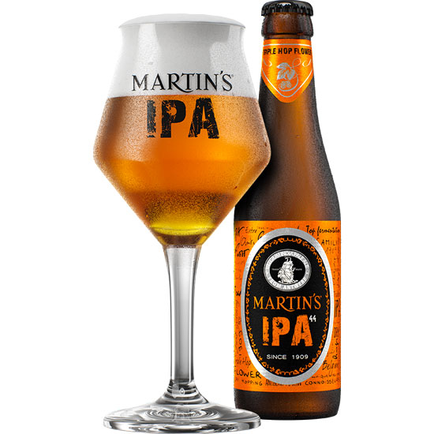

IPA
test Индийский пейл-эль (India Pale Ale, сокращ. IPA, что значит «индийский светлый эль») — сильно охмеленная разновидность пейл-эля (устар. пель-эль). Хмель придаёт пиву богатый аромат и приятную горечь. Это наиболее востребованный стиль крафтового пива в США. More